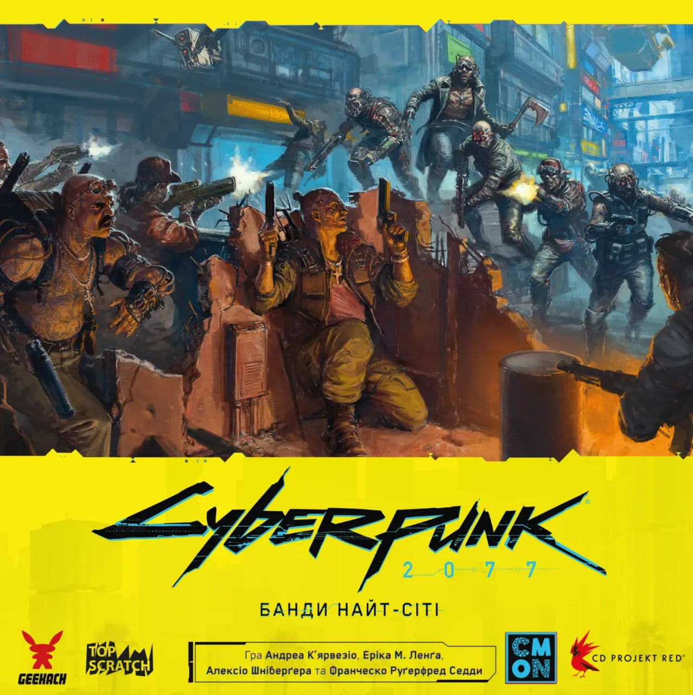
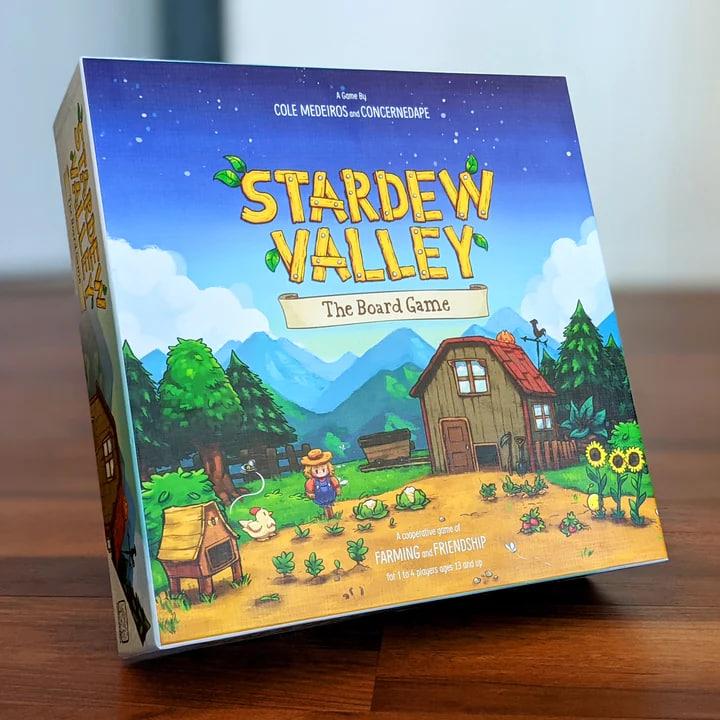
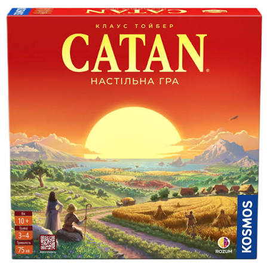
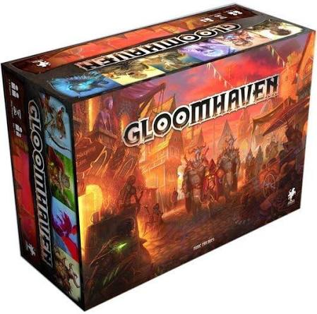

1-4 гравці
Cyberpunk 2077
Настільна адаптація з фокусом на спеціалізовані білди, зброю та тактичні бої у Найт-Сіті.

Настільна адаптація з фокусом на спеціалізовані білди, зброю та тактичні бої у Найт-Сіті.

Кооперативна гра для 1-4 гравців про спільний розвиток ферми, риболовлю та дослідження шахт.

Класична стратегія, де гравці збирають ресурси для розбудови власних поселень на острові.

Масштабна тактична рольова гра з глибокими підземеллями у похмурому фентезійному світі.